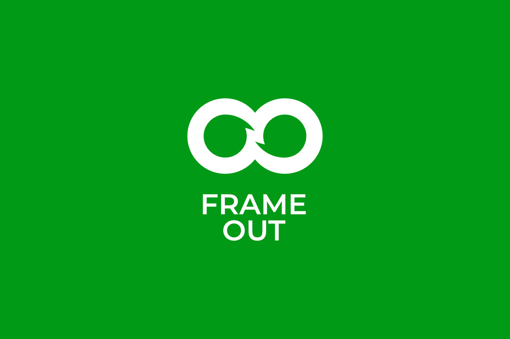
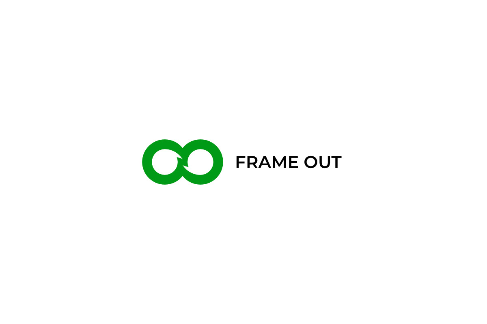
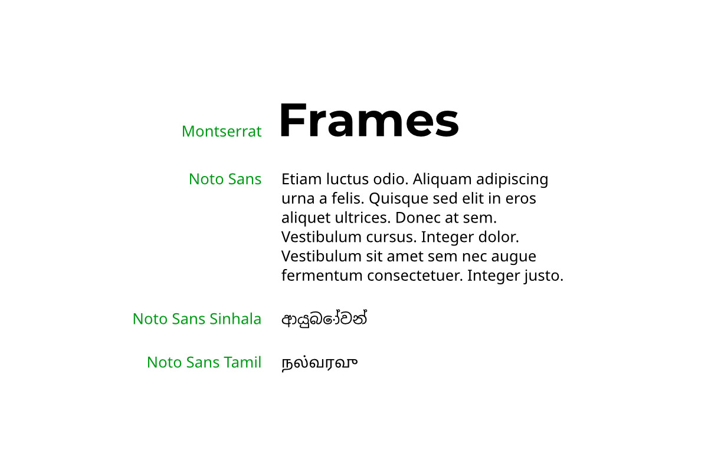
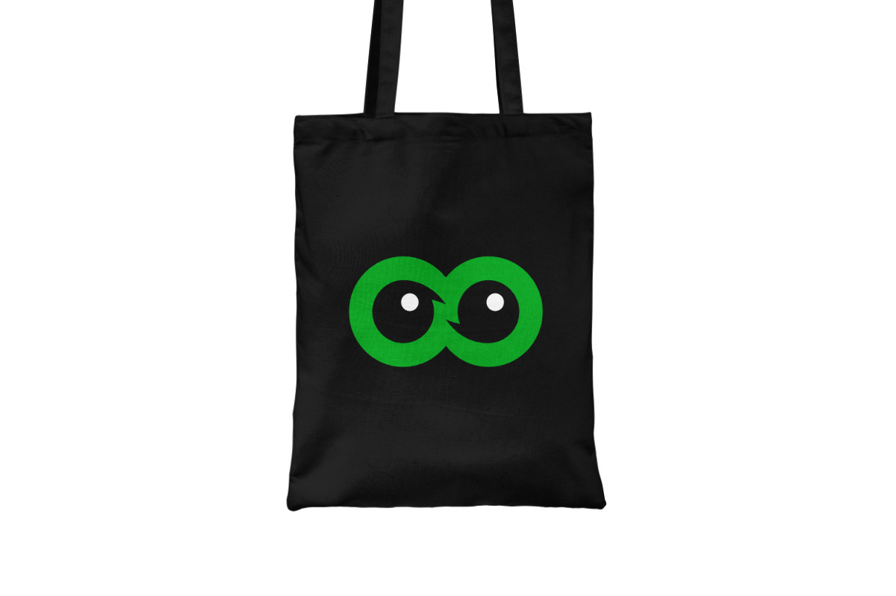

This concept is distinct and modern. It empathizes on dialog, sustainability, inclusion and pluralism. All of those features are conveyed by smooth, playful shapes, green color, dynamic elements that feature empowerment, growth.
It has a friendly, charismatic vibe and more suitable for modern platforms such as social media. The logo can also be played with. You can place different phrases inside the two speech bubbles, make it a hero mask, an owl face, etc.




The concept utilizes Montserrat font for headings and logo, as it is a bold choice. Yet, for more compact text blocks and other headings in other languages, it is better to use Noto Sans.